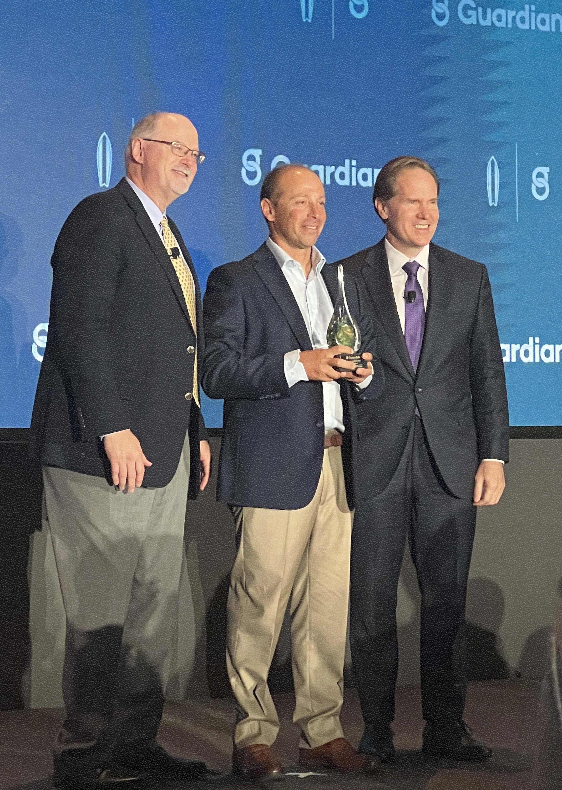

5,000+ physicians covered
Residents & fellows across the US
Independent broker
for Residents & Fellows
6-step questionnaire · ~2 minutes
(609) 432-8862
The Process
Three steps to the right coverage
No confusing jargon. No pressure. Just a clear picture of where you stand and what your options are.
01
Answer a few questions
Our 6-section form covers your contact info, career stage, current insurance, and finances. Takes about 2 minutes.
02
We build your file
Jay reviews your responses, and comes up with the best options for you.
03
Connect and decide
Connect and customize a policy that meets your specific needs and objectives.
Why It Matters
Protect your most valuable asset over your career
The right time to plan is often while you're in school or training—when exclusive options, discounts, and coverage that can grow with you are often within reach.
Earning power
Protect your most valuable asset over your career—your future income in your chosen specialty.
Exclusive policies
Take advantage of exclusive policies that may not be available in the future.
Lock in value
Lock in a low-cost policy now that can grow with you throughout your career.
Training discounts
Discounts are available to the majority of medical students, residents, and fellows.

CLU · ChFC
Chartered designations
About
Jay Weinberg
Founder, PGY1 Financial Solutions Corp
Jay has spent his career focused on one thing: making sure physicians don't reach their attending years without the income protection they've earned. He built PGY1.com specifically for residents and fellows — the stage where coverage matters most and is least understood.
As an independent broker, Jay represents multiple insurance companies and has access to exclusive GSI policies through Guardian based on the institution you're training at.
Have a question before you fill out the form? Jay picks up the phone.
Real feedback from physicians who went through the same process you're starting.
★★★★★
"I first met Jay at a medical conference in medical school, then followed his educational webinars—financial information I was never taught in the classroom."
★★★★★
"Once I matched into residency, I used Jay and his team at PGY1 to help secure a comprehensive individual disability policy with Guardian."
★★★★★
"For years Jay had been providing educational lectures to our orthopaedic program. Because of my medical record, a traditionally underwritten policy would have been very hard to secure."
★★★★★
"Jay is the broker for an exclusive GSI disability policy with no health questions—true own-occupation coverage that will travel with me after training. He was the only broker who could place me in this product."
★★★★★
"Before connecting with Jay I had spoken to several brokers, but none were the right fit. At my program director's recommendation, I reached out to PGY1."
★★★★★
"They placed me in a Guardian GSI policy the other agents never brought up—no health questions, and it addressed my pre-existing conditions. I now refer residents and fellows I know to Jay's team whenever I can."
Clear, plain-language guidance on physician disability insurance for residents and fellows. Learn how True own occupation, Medical specialty specific true own occupation, and GSI (Guaranteed standard issue) can differ based on your program, carrier, and eligibility.
PGY1 helps you compare True own occupation and medical specialty specific true own occupation options with institutional programs, including GSI / Guaranteed standard issue when available. In some eligible program paths, underwriting may be simplified, with cases where carriers can overlook pre-existing medical conditions or overlook hazardous activities. Final definitions, pricing, and eligibility always depend on the carrier and your program. The questionnaire starts a broker conversation, not a binding quote.
GSI (guaranteed standard issue)
Guaranteed standard issue (GSI) is a program-linked path that may be available to eligible residents and fellows. Rules depend on your institution and carrier, and it is not identical to every individually underwritten plan.
No health questions asked (when applicable)
Some eligible GSI paths are designed with no health questions asked in the same way a traditional private application might require. Eligibility and underwriting rules still vary by class, institution, and carrier.
Pre-existing conditions and hazardous activities
How carriers review prior history and risk activities depends on your path (GSI, group, or private underwriting). In some eligible cases, program design can be more flexible, but this is not a promise of approval, pricing, or final terms.
Frequently asked questions
What is GSI (guaranteed standard issue)?
Guaranteed standard issue, or GSI, refers to physician disability insurance programs that may be offered to eligible members of a class (for example, through a hospital or residency/fellowship program). Compared with full individual underwriting, some GSI paths are simplified, but availability and details still depend on program and carrier rules.
What is true own-occupation coverage?
True own occupation describes policy language focused on your ability to work in your trained profession and specialty. Medical specialty specific true own occupation language is especially relevant for physicians whose income depends on specialty-level duties. Definitions, riders, and benefits vary by carrier and policy.
How does physician disability insurance relate to my medical specialty?
Physician disability insurance is often evaluated around the specialty you are training for, because specialty duties can define income risk. Your questionnaire answers help compare options tied to your stage, institution, and long-term specialty path. Final wording always comes from the policy contract.
Do GSI or similar programs require health questions?
Eligibility and underwriting rules depend on the specific GSI or group program, your institution, and carrier requirements. Some eligible programs are structured with no health questions asked compared with a traditional private application, but rules vary. A broker can confirm what applies in your case.
What about pre-existing conditions?
The impact of prior health history and risk profile depends on your path (GSI, group, or private underwriting) and carrier forms. In some eligible program designs, underwriting can be more flexible and may overlook pre-existing medical conditions or overlook hazardous activities, but this site does not guarantee an offer, rate, or terms.
Ready to see what coverage makes sense for you?
The questionnaire takes about 2 minutes. Jay's team does the rest.